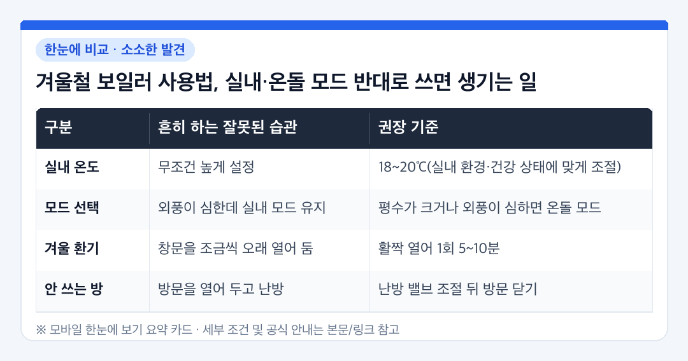

겨울철 보일러 사용법, 실내·온돌 모드 반대로 쓰면 생기는 일
3줄 핵심 요약
- 겨울철 실내 난방온도는 20℃가 적정 기준이에요. 설정온도를 1℃ 낮추면 에너지 소비량이 7% 줄어요.
- 단열이 잘되면 실내 모드 18~20℃, 평수가 크거나 외풍이 심하면 온돌 모드가 맞아요.
- 경동나비엔 NR-67D의 실내 모드는 조절기 주변 공기 온도로, 온돌 모드는 방바닥에 흐르는 물의 온도(30~65℃ 범위에서 0.5℃씩 조절)를 기준으로 가동·정지해요.

한눈에 비교
| 구분 | 흔히 하는 잘못된 습관 | 권장 기준 |
|---|---|---|
| 실내 온도 | 무조건 높게 설정 | 18~20℃(실내 환경·건강 상태에 맞게 조절) |
| 모드 선택 | 외풍이 심한데 실내 모드 유지 | 평수가 크거나 외풍이 심하면 온돌 모드 |
| 겨울 환기 | 창문을 조금씩 오래 열어 둠 | 활짝 열어 1회 5~10분 |
| 안 쓰는 방 | 방문을 열어 두고 난방 | 난방 밸브 조절 뒤 방문 닫기 |